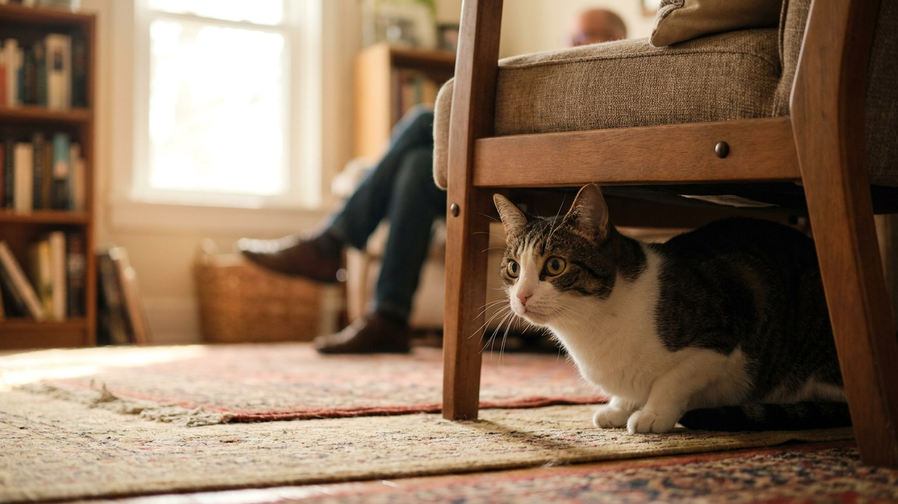

Кошка внезапно боится одного человека: причины и как восстановить доверие

9 июня 2026 · 7 минут чтения · Поведение · Стресс · Кошки
Ещё вчера кошка охотно шла на руки — а сегодня убегает, как только один человек входит в комнату. Все остальные в порядке. Это не «вредность» и не обида: кошка не умеет злиться «назло». За внезапным избеганием почти всегда стоит конкретный триггер — и его можно найти и устранить.
🐾 Спросите AI-ветеринара прямо сейчас
AnimaLife — приложение, где AI-ветеринар отвечает на вопросы о кошке или собаке 24/7. Бесплатно, без записи и очередей.
Открыть в Telegram → Открыть в MAX →
Почему кошки вообще так реагируют: механизм перенесённой ассоциации
Кошки — животные с очень точной ассоциативной памятью. Если что-то пугающее или болезненное произошло в момент, когда рядом был конкретный человек, кошка связывает эти два события: «этот человек = опасность». Даже если человек не был причиной испуга.
В поведенческой науке это называется «displaced aggression» или, точнее, «displaced fear» — смещённый страх или перенесённая ассоциация. Механизм тот же, что у классического павловского рефлекса: случайное совпадение двух стимулов создаёт устойчивую нейронную связь.
Важно: кошка не «винит» человека сознательно. Она просто ощущает тревогу при его появлении — и реагирует избеганием.
Частые триггеры: что чаще всего вызывает внезапную реакцию
Вот наиболее распространённые причины, которые стоит проверить первыми:
- Новый запах. Духи, крем, мыло, стиральный порошок, масло — кошка знала человека по привычному запаху, а теперь он пахнет иначе. Для кошки это буквально другой объект. Особенно часто срабатывает после смены парфюма или шампуня.
- Запах другого животного. Человек погладил чужую кошку или собаку — пришёл домой, пахнет чужим. Кошка воспринимает это как вторжение нового существа.
- Новая обувь или одежда. Незнакомый запах на одежде или скрип новой обуви могут напугать кошку и создать ассоциацию «этот человек в этой обуви = непредсказуемо».
- Напугал случайно. Громко чихнул, упал предмет рядом с кошкой, резко встал с кресла, в котором кошка спала — и она испугалась. Если человек был рядом — он «виновен».
- Неприятная процедура. Стрижка когтей, закапывание в уши, дача таблетки — если это делал конкретный человек, кошка может начать его избегать после.
- Изменение голоса или манеры поведения. Стресс, болезнь, изменение гормонального фона меняют запах и поведение человека. Кошка улавливает это точнее, чем мы думаем.
Как выявить конкретный триггер
Действуйте методом исключения:
- Вспомните, когда именно началось избегание. Что изменилось в тот период? Новые духи, поездка, болезнь, смена работы?
- Попробуйте «нейтрализовать запах»: человеку принять душ без новых средств, надеть старую привычную одежду. Если кошка реагирует лучше — проблема была в запахе.
- Проверьте обувь: снимайте на входе и наблюдайте, меняется ли реакция.
- Если человек недавно контактировал с другими животными — попросите его тщательно вымыть руки и сменить одежду перед контактом с кошкой.
Протокол восстановления контакта: шаг за шагом
Торопиться нельзя. Главное правило — кошка должна самостоятельно выбирать степень близости, без принуждения.
- Шаг 1: присутствие без контакта. Человек просто находится в одной комнате с кошкой — читает, сидит, не смотрит на неё. Кошка привыкает к присутствию без давления. Это может занять несколько дней.
- Шаг 2: еда как посредник. Именно этот человек начинает кормить кошку — ставит миску и отходит. Еда создаёт положительную ассоциацию с запахом/силуэтом человека.
- Шаг 3: лакомство из руки. Когда кошка спокойно ест в присутствии человека, попробуйте давать лакомство с ладони — кладите на пол близко к себе, постепенно поднося ближе к руке.
- Шаг 4: контакт по инициативе кошки. Не тянитесь к кошке. Дайте ей обнюхать руку, если сама подошла. Никаких объятий и удержания.
- Шаг 5: игра. Удочка-дразнилка — идеальный инструмент. Человек играет с кошкой на расстоянии, постепенно сокращая его.
Чего категорически не делать
- Ловить и удерживать кошку насильно. «Пусть привыкнет» — этот подход закрепляет страх, а не устраняет его. Каждый насильственный контакт откатывает прогресс.
- Наказывать за избегание. Кошка убегает — её не ругают. Она не понимает, за что наказание, и начинает бояться ещё больше.
- Слишком торопиться. Восстановление доверия у кошки может занять от недели до нескольких месяцев — в зависимости от исходного уровня тревожности животного.
- Игнорировать проблему. Если не работать с ситуацией, страх может закрепиться и стать постоянным.
Когда стоит обратиться к специалисту
Большинство случаев перенесённой ассоциации решается в течение 2–4 недель при последовательной работе. Но если:
- Кошка демонстрирует агрессию (шипит, бросается) — а не просто убегает.
- Избегание распространяется на всех людей в доме, а не на одного.
- Поведение продолжается более 2 месяцев без улучшений.
- Одновременно появились другие изменения (отказ от еды, изоляция, перестала ходить в лоток).
В этих случаях имеет смысл проконсультироваться с ветеринарным бихевиористом — специалистом по поведению животных.
🐾 Дневник здоровья питомца — в кармане
Вес, прививки, симптомы и напоминания в одном приложении. AnimaLife следит за здоровьем питомца вместо вас.
Завести дневник → Открыть в MAX →
🐾 Понравился разбор?
Подпишитесь на канал — каждый день разбираем по одному тревожному симптому у кошек и собак: что в пределах нормы, а когда пора к врачу. Подпишитесь, чтобы не пропустить разбор, который может спасти здоровье вашего питомца.
← Все статьи · Открыть AnimaLife в Telegram · RSS